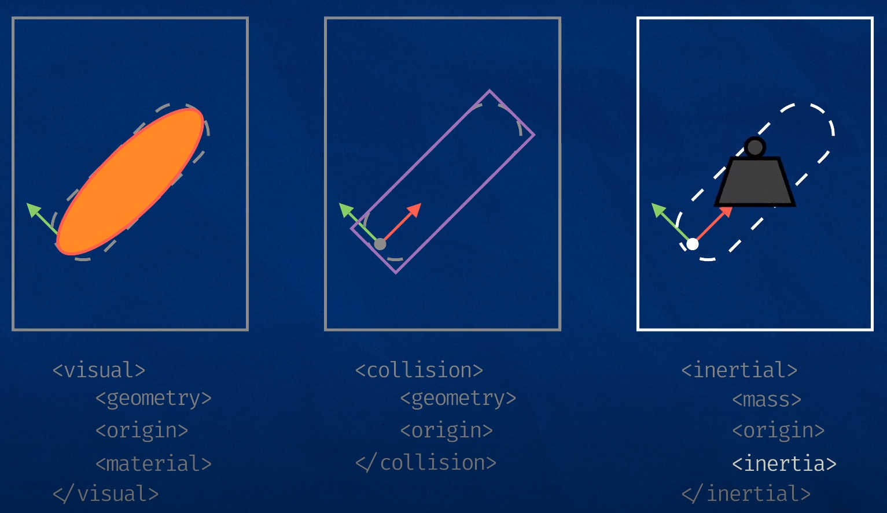
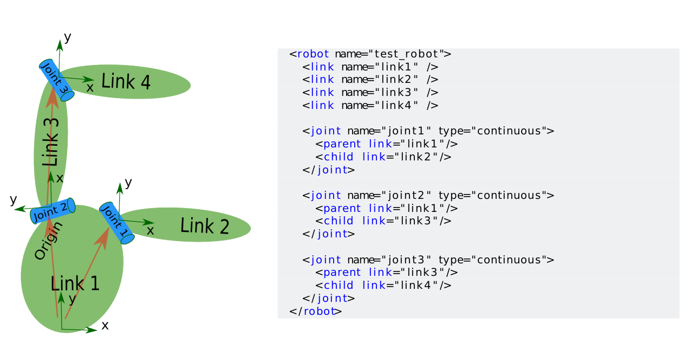
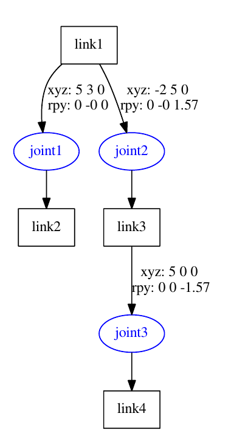

layout: true <div class="header"><img src="https://images.squarespace-cdn.com/content/v1/51df34b1e4b08840dcfd2841/1606823817404-Z5YILRLYBT2VHCN6JVCB/RIC+Europe+Logo+TM.png" style="background-color:transparent"/></div> <div class="footer"><img src="https://www.ipa.fraunhofer.de/content/dam/ipa/ipa.svg" /><p>© Fraunhofer IPA</p></div> <div class="triangle"></div> --- # Robot Description ## Understanding how the world is formally described <div> <center> <img src="resources/0_robot_looking.png" width="500px"> </center> </div> --- # Contents 1. **URDF** - Universal Robot Description File 2. **XACRO** - XML Macros 3. **Setting up a Workcell** --- <!-- Page 3 --> # Motivation ### The need to formally describe the robotic system in a human readable and platform independent way. ### The formal description of the world is called as robot description and is stored in a URDF file. <!-- When we create a robotic system, there may be many different software components that need to know about the physical characteristics of the robot. All of this information needs to be in one common location, where any software component can reference it. --> --- <!-- Page 4 --> # Unified Robot Description Format(URDF) - URDF - human readable and platform independent way to define robots, sensors, and scene objects - Robot is described as a tree of `links`, that are connected by `joints`. - **Links** - represent the physical components of the robot - **Joints** -represent how one link moves relative to another link Things that can be described in a URDF file includes * Collision properties * Visual properties * Joints and Links * Joint dynamics - Friction and Damping * Physical properties - Inertia --- <!-- Page 5 --> ## Joint Types in URDF URDF supports the following types of joints: <table> <thead> <tr> <th>Type</th> <th>Motion</th> <th>Range</th> </tr> </thead> <tbody> <tr> <td>Revolute</td> <td> Rotates along an axis,</td> <td>Limited range</td> </tr> <tr> <td>Continuous</td> <td>Rotates around an axis,</td> <td>No limits</td> </tr> <tr> <td> Prismatic</td> <td>Slides along an axis,</td> <td>Limited range</td> </tr> <tr> <td>Fixed</td> <td>Simplest, constant, not really a "joint"</td> <td>Limited</td> </tr> <tr> <td>Floating</td> <td>Allows motion for all 6 DoF.</td> <td>No limits</td> </tr> <tr> <td>Planar</td> <td>Allows motion in a plane perpendicular to an axis</td> <td>No limits</td> </tr> </tbody> </table> --- <!-- Page 6 --> # URDF Syntax ## Robot tag and XML declaration XML files usually have a xml declaration followed by a single root tag. ```xml <?xml version="1.0"?> <robot name="my_robot"> ... all the rest of the tags ... </robot> ``` For URDF files the root tag will be `<robot> </robot>` tag and the name attribute lets us specify the name of the component. --- <!-- Page 7 --> ## URDF Syntax ### Link Tag A link tag lets us specify the name of a link, as well as some additional characteristics: visual, collision, and inertial properties 1. **Visual** - This is what we see in RViz and Gazebo. - **Geometry** - Box/ cylinder / sphere with size parameters, or a mesh in the form of .stl or .dae - **Origin** - An offset for the geometry from the origin - **Material** - We can specify the colour 2. **Collision** - This is used for physics collision calculations - **Geometry** - Same as for visual - **Origin** - Same as for visual 3. **Inertial** - This is also used for physics calculations, but determines how the link responds to forces - **Mass** - Mass of the link - **Origin** - The centre of mass - **Inertia** - The rotational inertia matrix. <!-- It describes how the distribution of the mass will affect rotation --> --- <!-- Page 8 --> ## URDF Syntax - Link tags <div> <center>  </center> </div> Figure 1: visual representation of link tags --- <!-- Page 9 --> ## URDF Syntax ### Joint Tag Each joint will have the following - **Name** - A name for the joint - **Type** - The joint type - **Parent and child links** - Which links this joint defines a relationship between - **Origin** - The relationship between the two links, before any motion is applied - **Axis** - Which axis to move along or around - **Limits** - Physical actuation limits. - **Upper and Lower position limits** - in metres/radians - **Velocity limits** - in m/s or rad/s - **Effort limits** - in N or Nm --- <!-- Page 10 --> ## URDF example :Setting up a 3 DOF robot <div> <center>  </center> </div> --- <!-- Page 11 --> ## URDF example :Adding dimensions ```xml <robot name="test_robot"> <link name="link1" /> <link name="link2" /> <link name="link3" /> <link name="link4" /> <joint name="joint1" type="continuous"> <parent link="link1"/> <child link="link2"/> <origin xyz="5 3 0" rpy="0 0 0" /> </joint> <joint name="joint2" type="continuous"> <parent link="link1"/> <child link="link3"/> <origin xyz="-2 5 0" rpy="0 0 1.57" /> </joint> <joint name="joint3" type="continuous"> <parent link="link3"/> <child link="link4"/> <origin xyz="5 0 0" rpy="0 0 -1.57" /> </joint> </robot> ``` --- <!-- Page 12 --> ## URDF example :Completing kinematics ```xml <robot name="test_robot"> <link name="link1" /> <link name="link2" /> <link name="link3" /> <link name="link4" /> <joint name="joint1" type="continuous"> <parent link="link1"/> <child link="link2"/> <origin xyz="5 3 0" rpy="0 0 0" /> <axis xyz="-0.9 0.15 0" /> </joint> <joint name="joint2" type="continuous"> <parent link="link1"/> <child link="link3"/> <origin xyz="-2 5 0" rpy="0 0 1.57" /> <axis xyz="-0.707 0.707 0" /> </joint> <joint name="joint3" type="continuous"> <parent link="link3"/> <child link="link4"/> <origin xyz="5 0 0" rpy="0 0 -1.57" /> <axis xyz="0.707 -0.707 0" /> </joint> </robot> ``` --- <!-- Page 13 --> ## The Created Kinematic Chain By making use of `tf2_tools/view_frames` one could display the created kinematic chain: ```shell ros2 run tf2_tools view_frames ``` <div> <center>  </center> </div> --- <!-- Page 14 --> # Best Practices ## Naming Conventions - Keeping our links/joints paired, and using the suffix `_link` and `_joint` (e.g. `arm_link` and `arm_joint`) - Follow the ROS conventions for [manipulators](https://gavanderhoorn.github.io/rep/rep-0199.html) - Follow the ROS conventions for [mobile platforms](https://ros.org/reps/rep-0105.html) --- <!-- Page 15 --> # XACRO ### URDF: - Manual calculation of joints dimensions - Manual copying of URDF if a second robot is to be used - No constant definition available ### XACRO - Cleaning up URDF files - Constants - Simple math - Macros (repeatibility) --- <!-- Page 16 --> ## Introducing XACRO #### XACRO - short for XML macro - To enable the use of `xacro` in our file, add robot tag ```xml <robot xmlns:xacro="http://www.ros.org/wiki/xacro"></robot> ``` - When we want a `URDF` we need to run the `xacro` parser first, which will process multiple files into a single, complete `URDF file`. <div> <center> </center> </div> - Even if we had multiple files going in, it would publish as one message to the `robot_description` topic. --- <!-- Page 17 --> ### XACRO: Adding constants #### XACRO definition ```xml <xacro:property name=" width " value=" 0.2 " /> <xacro:property name="bodylen" value=" 0.6 " /> <link name=" base_link "> <visual> <geometry> <cylinder radius="${width}" length="${bodylen}" /> </geometry> </visual> </ link> ``` #### generated URDF ```xml <link name=" base_link "> <visual> <geometry> <cylinder radius="0.6" length="0.2" /> </geometry> </visual> </ link> ``` --- ### XACRO: Conditional blocks #### Syntax ```xml <xacro : if value="<expression>"> < . . . some xml code here . . .> </xacro : if> <xacro:unless value="<expression>"> < . . . some xml code here . . .> </xacro:unless> ``` #### XACRO definition ```xml <xacro:property name=" var " value=" useit " /> <xacro : if value="${var==’useit’} " /> <xacro : if value="${var.startswith(’use’) and var.endswith (’it’)}" /> <xacro:property name="allowed" value=" [1 ,2 ,3] " /> <xacro : if value="${1 in allowed}" /> ``` --- <!-- page 18 --> ### XACRO: Math #### XACRO definition ```xml <xacro:property name="wheel_diameter" value="0.5" /> <xacro:property name="reflect" value="-1" /> <xacro:property name="width" value="0.4" /> <cylinder radius="${wheel_diameterm/2} " length=" 0.1 " /> <origin xyz="${ reflect*(width+.02)} 0 0.25" /> ``` #### Generated URDF ```xml <cylinder radius="0.25" length=" 0.1 " /> <origin xyz="-0.42 0 0.25" /> ``` - All of the math is done using floats --- <!-- page 19 --> ### XACRO: Macros #### [Using XACRO to Clean Up a URDF File](http://wiki.ros.org/urdf/Tutorials/Using%20Xacro%20to%20Clean%20Up%20a%20URDF%20File) #### macro definition ```xml <xacro:macro name=" default_origin "> <origin xyz="0 0 0" rpy="0 0 0" /> </xacro:macro> ``` #### macro instantiation ```xml <xacro:default_origin /> ``` #### Generated URDF ```xml <origin rpy="0 0 0" xyz="0 0 0" /> ``` --- <!-- page 20 --> ### XACRO: Parametrized Macros <!-- - You can also parameterize macros so that they don’t generate the same exact text every time. When combined with the math functionality, this is even more powerful. --> - XACRO definition ```xml <xacro:macro name=" " params="mass x y z *origin"> <inertial> <xacro:insert_block name="origin"/> <mass value="${mass}" /> <inertia ixx="${(1/12) * mass * (y*y+z*z)}" ixy="0.0" ixz="0.0" iyy="${(1/12) * mass * (x*x+z*z)}" iyz="0.0" izz="${(1/12) * mass * (x*x+y*y)}" /> </inertial> </xacro:macro> ``` - XACRO instantiation ```xml <xacro:inertial_box mass="5" x="${robotcell_length}" y="${shield_thickness}" z="${robotcell_height}"> <origin rpy="0 0 0" xyz="0 0 0" /> </xacro:inertial_box> ``` - Generated URDF ```xml <inertial> <origin rpy="0 0 0" xyz="0 0 0"/> <mass value="5"/> <inertia ixx="0.5610416666666665" ixy="0.0" ixz="0.0" iyy="1.4246666666666665" iyz="0.0" izz="0.8643749999999999"/> </inertial> ``` --- <!-- page 21 --> ## Executing XACRO - Change directory to the urdf directory of the ROS package and then export urdf files ```shell ros2 run xacro xacro robot_model.urdf.xacro > robot.urdf ``` - To check urdf files during development ```shell check_urdf <(xacro workcell.urdf.xacro) ``` - To generate URDF from XACRO ```shell xacro workcell.urdf.xacro > workcell.urdf ``` --- <!-- page 28 --> <div class="centered"> <h2> <center> End of Presentation </center> </h2> <h1> <center> Questions </center> </h1> </div> --- <div class="centered"> <h2> <center> Let us setup a complete Robot cell now </center> </h2> </div>